{kind=link}
Дари еду
Организация ВРООИ "Адаптспорт" заключила договор с проектом "Дари еду". Теперь наши семьи, воспитывающие детей с ОВЗ, смогут регулярно получать продуктовые наборы.
Боксы проекта "Дари еду" находятся в:
магазинах ВкусВилл на ул. Хользунова, д. 35 и ул Кольцовской, д. 31
Гипермаркете Московский проспект
магазине Лента (Московский проспект, д.129/1)
Гипермаркете Лента на ул. Домостроителей, д. 24,
магазине Альянс (с. Новая Усмань, ул. Ленина, д. 78 в).
В дальнейшем для того, чтобы этот проект продолжал набирать обороты в нашем регионе, нам необходимо поставить дополнительные боксы в торговых точках. Мы открыты для сотрудничества с магазинами, желающими оказать содействие этому проекту. Чем больше будет боксов, тем больше людей смогут получить помощь.
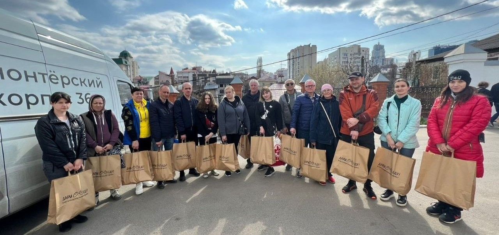
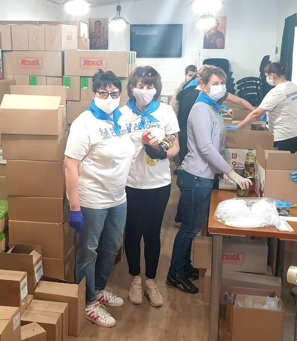
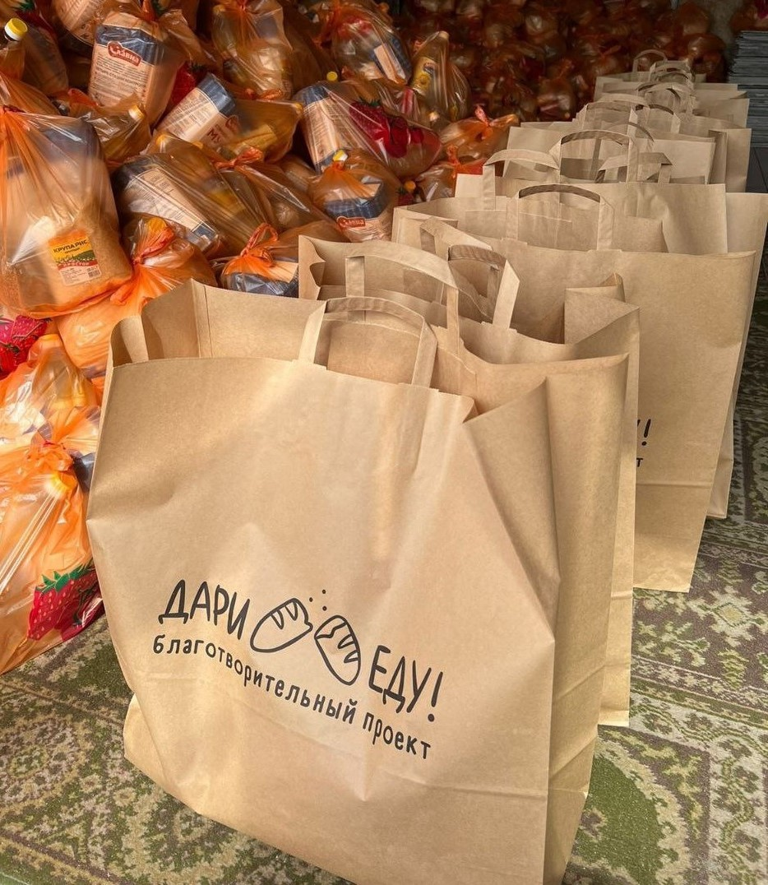
Кто, кто в теремочке живет?
В помещении, расположенном на территории Богоявленского храма г. Воронежа, и передаваемом ВРООИ "АДАПТСПОРТ" в безвозмездное пользование, создан центр социально-психологической поддержки семей с детьми с ограниченными возможностями здоровья (синдром Дауна, ДЦП, аутизм и др.) - "Кто, кто в Теремочке живет".
Название проекта выбрано не случайно - работа центра предусматривает оказание поддержки и объедение на одной площадке семей, воспитывающих детей с различными диагнозами и особенностями развития, вне зависимости от их национальности, вероисповедания и социального статуса.
Цель проекта - оказать поддержку не только детям, но и их родителям, зачастую остающимся с болезнью детей один на один.
Мероприятия проекта разделены на три основных направления:
Социально-психологическая поддержка родителей.
Сюда входят: семинары, тренинги, занятия, мастер-классы для родителей, направленные на профилактику эмоционального выгорания, на развитие навыков воспитания детишек с особенностями, на возможность отвлечься от болезни ребенка, которая стала во главе всего семейного уклада, на осознание и возможность жить, радоваться и развиваться вместе со своим особенным ребенком. Во время проведения мероприятий для родителей, с детьми занимаются опытные педагоги и волонтеры, что позволяет родителям полностью переключиться на предлагаемый материал или попросту отдохнуть.
Социально-коммуникативное развитие детей с ОВЗ.
Это направление подразумевает под собой занятия и мероприятия для детей с ОВЗ. В первую очередь это совместные культурно-досуговые мероприятия, подготовка и проведение праздников и концертов с вовлечением и участием детей с ОВЗ, мастер-классы и тренинги по развитию коммуникативных навыков.
Духовно-просветительская поддержка семей.
Сюда входит духовное окормление детей и их родителей клириками Богоявленского храма. Раз в месяц служится Литургия по особому чину (сокращенная) для того, чтобы в ней могли принять участие не только взрослые, но и дети с особенностями развития. После Литургии обязательно совместное чаепитие и беседа со священником. Помимо этого, для родителей и детей проводятся паломнические поездки по святым местам Черноземья.
Семинар "Психоречевое развитие детей с ОВЗ"
Предлагаем Вашему вниманию семинар "Психоречевое развитие детей с ОВЗ", проведённый при поддержке Фонда президентских грантов. В семинаре дается множество практических рекомендаций для занятий с детьми, а также говорится о проблемах коррекции поведения детей с инвалидностью.
Сенсорная интеграция, Хрипунова
Как сделать ребёнка послушным Копылова
Развитие графомоторных навыков у детей с ОВЗ
Эффективные приемы и методы , способствующие развитию мышления у детей с ОВЗ
Беседа "Как правильно воспринимать скорби"
Сегодня у нас прошла беседа с иереем Евгением Лищенюк на тему "Как правильно воспринимать скорби". Дискуссия получилась оживленной. Обсудили разные аспекты: и семейные, и глобальные проблемы, а также вопрос рождения особенных детей. Очень надеемся, что уже скоро эпидемиологическая ситуация нормализуется, и мы сможем снова встретиться в храме на Литургии. Беседа прошла при поддержке Фонда президентских грантов.
Изготовление цветов из гофрированной бумаги
Мы провели мастер-класс по изготовлению цветов из гофрированной бумаги для наших воспитанников и их родителей. Менеджер по культурно-массовому досугу Елена Пасько подготовила видео мастер-класса в онлайн режиме, дети совместно с их родителями изготовили дома цветы. Впоследствии мы провели конкурс на лучший цветок. Победители были награждены призами и грамотами. Благодарим всех участников конкурса!
Мастер-класс организован при поддержке Фонда президентских грантов.
Беседа "Христианское устройство семьи" для родителей детей с ОВЗ
16 июня мы провели онлайн-беседу с иереем Евгением Лищенюк на тему "Христианское устройство семьи" для родителей детей с ОВЗ. Обсудили вопросы, связанные с воспитанием детей и взаимоотношениями в семье, о роли супруга и супруги, о ошибках в семейной жизни. Беседа прошла при поддержке Фонда президентских грантов.
Семинар "Эмоциональное выгорание родителей детей с ОВЗ"
22 мая провели семинар "Эмоциональное выгорание родителей детей с ОВЗ". Тема очень актуальна для наших родителей. Психолог Щукина Н.В. рассказала о том, как определить наличие эмоционального выгорания и как с ним справляться. Дискуссия получилась очень интересной и оживлённой. Мероприятие прошло при поддержке Фонда президентских грантов. В рамках президентского гранта все семьи, являющиеся членами ВРООИ "Адаптспорт", смогут получить бесплатную консультацию у психолога Щукиной Натальи Владимировны.
Онлайн-семинар для родителей детей с ОВЗ «Эмоциональное выгорание родителей детей с ОВЗ». Семинар пройдет при поддержке Фонда президентских грантов.
- В программе:
- что такое эмоциональное выгорание;
- какие стадии выгорания существуют;
- мини-тест;
- как искать внутренние ресурсы;
- мотивационные упражнения;
- упражнения и методы самопомощи.
Докладчик: Щукина Наталья Владимировна - педагог-психолог, эксперт по родительско-детским отношениям, детский и семейный психолог, консультант в сфере раннего развития ребёнка, член Федерации психологов образования России.
Мастер-класс по рисованию акварелью
7 мая мы провели мастер-класс по рисованию акварелью для детей с ОВЗ в режиме онлайн. На мастер-классе использовались техники рисования восковыми мелками и акварелью. Благодаря восковым мелкам рисунки получились осень яркими и красочными. У всех деток получились красивые собачки. Мероприятие прошло при поддержке Фонда Президентских грантов. В мастер-классе приняли участие 15 детей.
Семинар для родителей
15 апреля мы провели в дистанционном формате семинар для родителей детей с синдромом Дауна, посвящённый проблемам воспитания и обучения солнечных детей. На семинаре обсудили проблемы социальной и психологической адаптации солнечных детей, раскрыли особенности диагноза и методы коррекции нарушений. Особое внимание уделили методикам психологического и речевого развития наших детей. В мероприятии приняли участие 22 человека. Семинар организован в рамках президентского гранта.
Проблемы социализации и обучения детей с особенностями развития
Развитие речи (часть 1)
Развитие речи (часть 2)
Арт-терапия для детей с синдромом Дауна
Развитие познавательных способностей https://cloud.mail.ru/public/3BFx/3jL6Je3d7
От звука слову, от слова к фразе
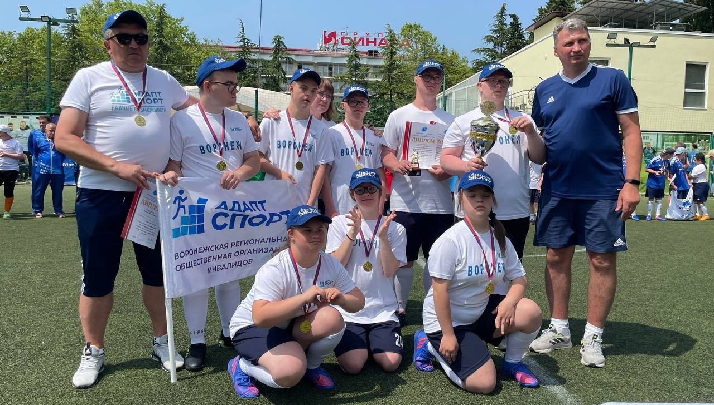
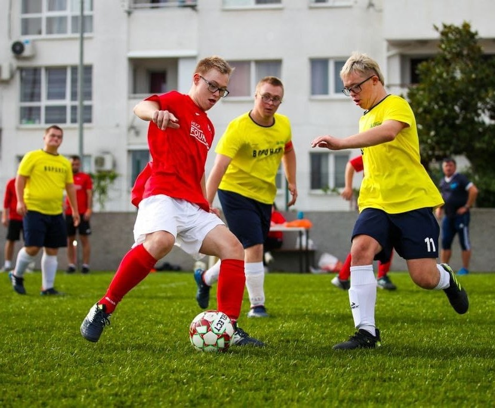
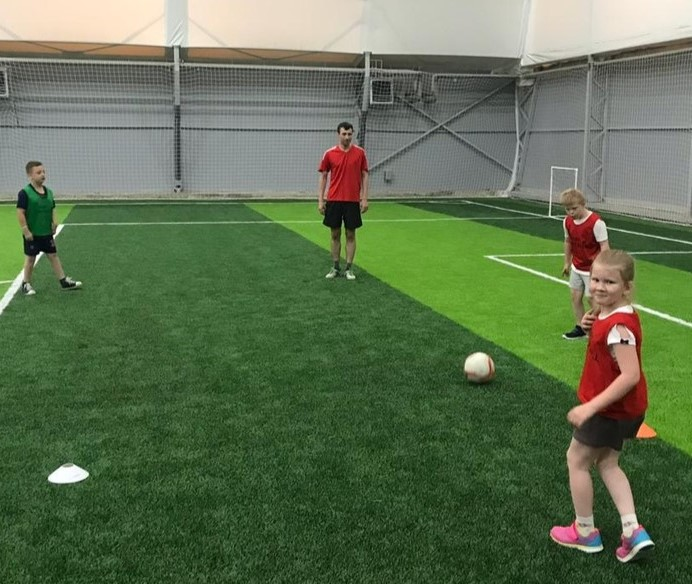
Адаптивный спорт – равные возможности
Проект "Адаптивный спорт - равные возможности" - это инициатива, направленная на популяризацию и повышение доступности занятий различными видами адаптивного спорта для детей с разными возможностями здоровья, а также повышение качества организации спортивного процесса, что неизменно скажется в первую очередь на здоровье и безопасности детей, ну и, конечно же, на привлекательности данных видов спорта и результатах.
В рамках проекта организованы МЕСЯЧНИКИ по каждому перспективному направлению адаптивного спорта, включающие в себя:
открытые показательные тренировки с приглашением родителей, детей, студентов спортивных ВУЗов
соревнования и показательные выступления
формирование секций и групп детей для тренировок и занятий
привлечение студентов спортивных ВУЗов к мероприятиям проекта в качестве волонтеров
популяризация спортивного направления через СМИ и интернет
Все эти мероприятия призваны раскрыть пользу и красоту спортивных направлений для родителей и детей, что приведет к увеличению количества детей, занимающихся спортом, показать перспективность и социальную значимость работы с детьми с ОВЗ для выпускников спорт. ВУЗов и тренеров. Привлечь внимание общества к проблемам детского адаптивного спорта и найти пути их решения.В рамках проекта предусмотрен цикл мероприятий, направленных на повышение уровня компетентности действующих тренеров, большинство из которых не обладают знаниями методик адаптивного и оздоровительного спорта.
Один из знаковых мероприятий проекта - "Фестиваль спорта", в котором принимают участие все команды, организованы показательные выступления и соревнования и праздник для детей и родителей с угощением и развлекательной программой, а также официальные мероприятия с участием заинтересованных лиц и ведомств.
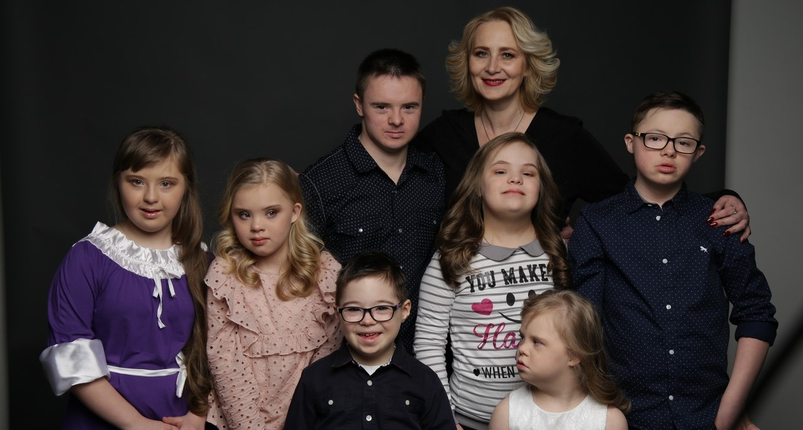
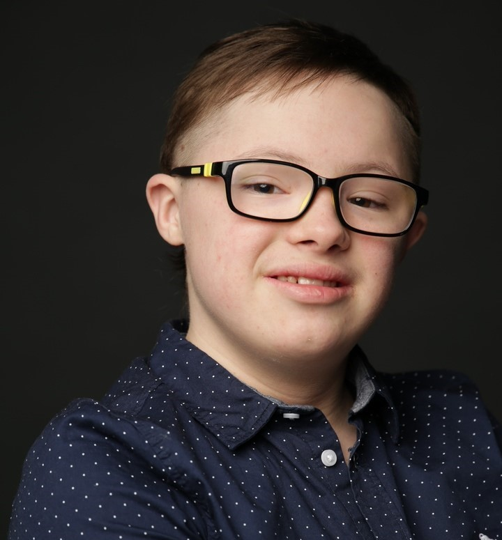
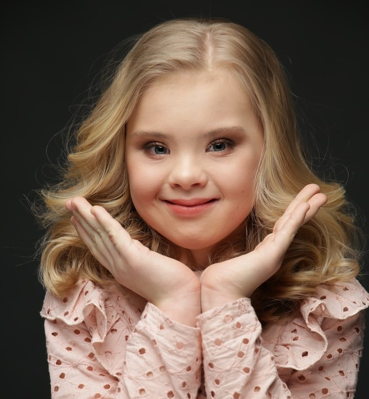
Адаптивный туризм - путешествуем вместе
В состав организации ВРООИ «Адаптспорт» входит более 350 семей, воспитывающих детей с ограниченными возможностями здоровья. Инвалидность у ребёнка - это серьёзный вызов как для семьи, так и для общества в целом, но так или иначе - это не приговор. Наша организация стремится создавать для детей с ОВЗ возможности для развития и самореализации, а главное - социализации таких детей.
Основная идея проекта:
Создание адаптивного туризма для детей с ограниченными возможностями здоровья (ОВЗ) в регионе.
Причина и необходимость:
Дети с ОВЗ часто ограничены в своих возможностях и привязаны к определённым условиям жизни.
Причина и необходимость:
Укрепление и сохранение здоровья. Расширение кругозора. Повышение жизненного тонуса. Социализация. Наполнение жизни положительными эмоциями и возможностями.
Ожидаемые результаты:
Возможность посетить красивые места Воронежской области. Знакомство с историческими местами, заповедниками, православными монастырями. Приобретение нового и уникального жизненного опыта. Благотворное влияние на социализацию в обществе.
Направления проекта:
Экологический туризм.
Изучение культуры.
Православный туризм.
Туризм-отдых.
Форматы мероприятий:
Экскурсии в заповедники, парки, музеи.
Посещение театров, выставок, фестивалей, спортивных мероприятий.
Летние экскурсии по православным местам Воронежской области.
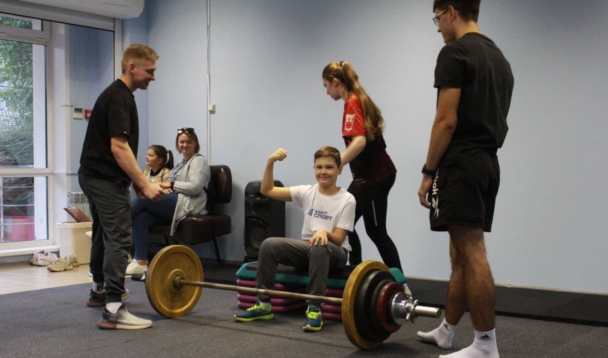
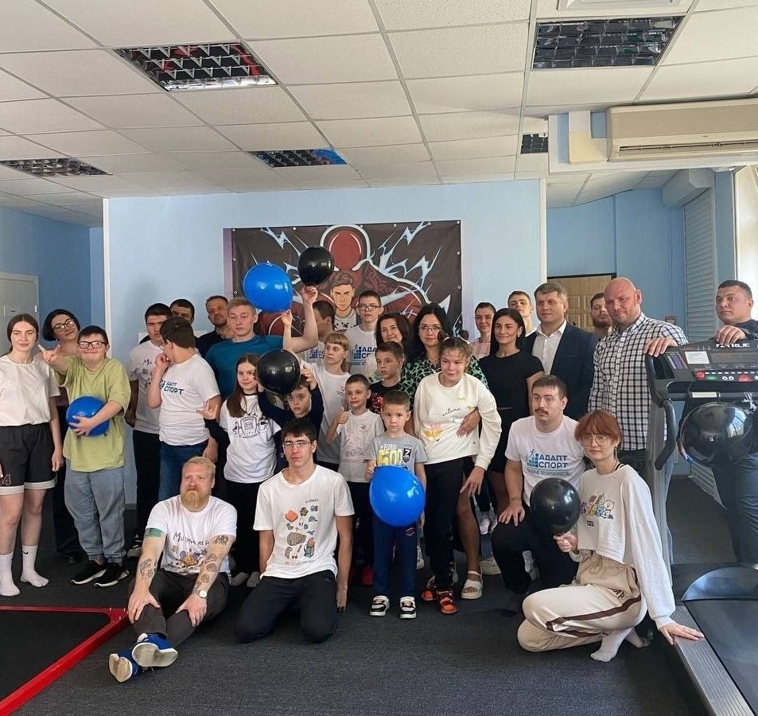
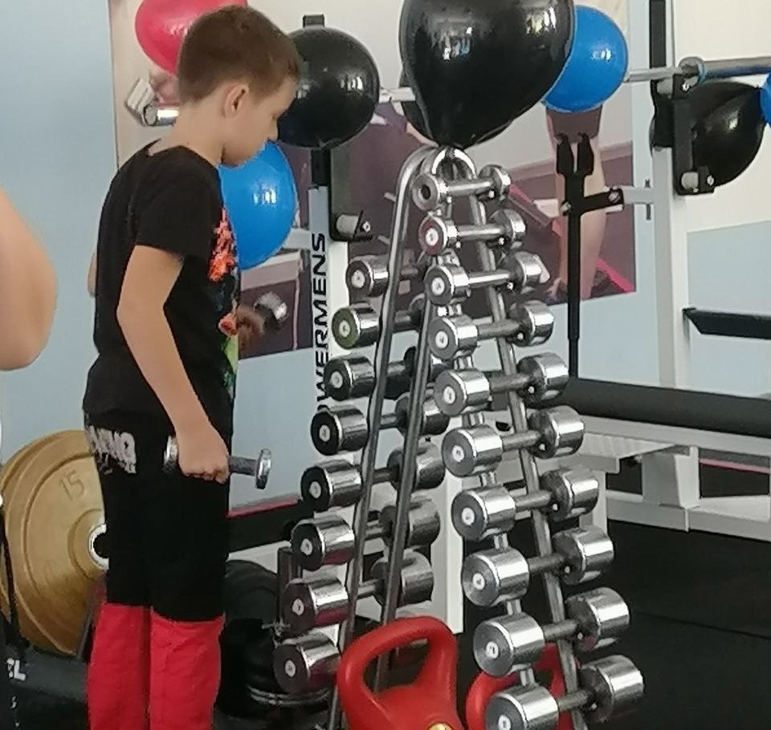